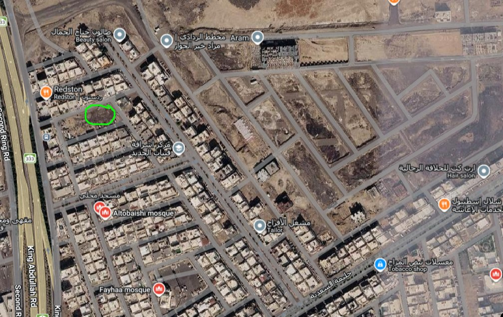

الزيارة الميدانية
تمت زيارة الموقع الساعة 7 مساءً تقريباً قبل صلاة العشاء، لأنه أفضل وقت تقدر تشوف فيه هل الحي مزدحم أو لا.
موقع المسجد
موقع المسجد مميز جداً، لأنه يخدم أغلب سكان الحي من الجهة الشمالية والشرقية، وفيه صور توضح ازدحام الحي. وأقرب مسجد لهم هو مسجد الطبيشي، ويبعد عن المسجد المراد بناؤه تقريباً ما بين 4–5 دقائق مشي.
وغير المسافة، سكان الجهة الشمالية والشرقية لازم يقطعون الشارع الرئيسي عشان يوصلون لمسجد الطبيشي، وهذا يصعّب عليهم الوصول.
وسألت شخص من الحي عن أقرب مسجد، وقال إنه بعيد وما فيه مسجد قريب من هنا، ويقصد مسجد الطبيشي. وفعلاً هو بعيد عن أهل الحي.
هل بيكون فيه مصلين؟
رحت لمسجد الطبيشي وصليت فيه صلاة العشاء. المسجد صغير شوي، تقريباً 6 صفوف، وكان ممتلئ 4 صفوف ونص تقريباً، وهذا يوضح إنه زحمة جداً وإن فيه كثافة سكانية عالية.
وكمان مسجد الطبيشي ما يصلي جمعة، يعني أهل الحي يوم الجمعة يروحون لجامع أبعد.
وبعد ما خلصت الصلاة، رحت أشوف المصلين يتجهون لأي جهة، واتضح لي إن فوق 20 شخص تقريباً يتجهون للشمال، لمكان المسجد اللي بنبنيه.
مستقبل الموقع
وجنب الموقع فيه مخطط جديد، وهذا يخلي موقع المسجد ممتاز أكثر، لأنه بيخدم سكان المخطط مستقبلاً بعد ما يتعمر.

الخلاصة
موقع المسجد ممتاز جداً لسكان الجهة الشمالية والشرقية، وبيسهّل عليهم الوصول للمسجد والصلاة.